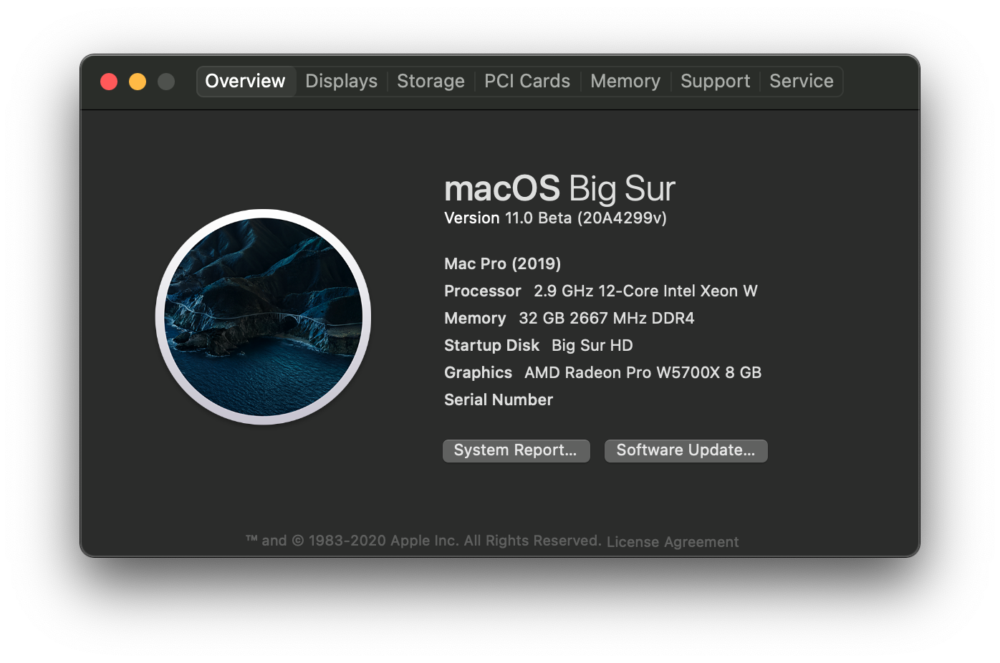
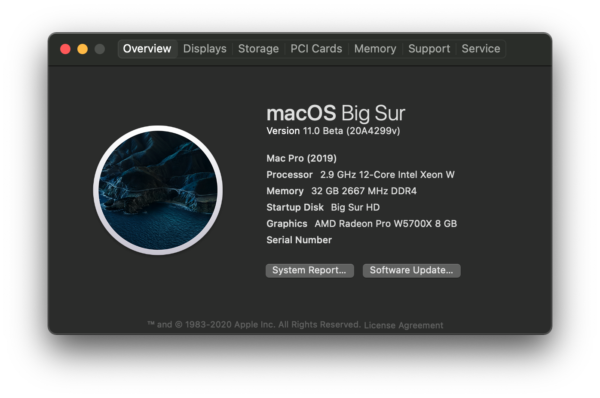

Example of a second page!
And here's an example of displaying an image:


For more examples on markdown, see here: Markdown Guide
And here's an example of displaying an image:


For more examples on markdown, see here: Markdown Guide